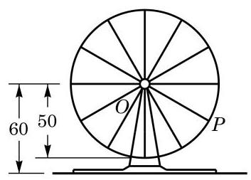
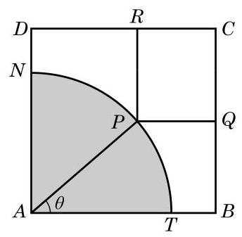

复习题A · 1
- 求下列函数的最小正周期:
(1) ; (2) .
学生阅读版 / 沪教版高中数学
必修第二册
第7章三角函数 · 保留教材主线与原题
教材与正式教参整合
| 三角函数 | 正弦函数 | 余弦函数 | 正切函数 |
| 定义域 | |||
| 值域 | [-1,1] | ||
| 最大值 | 1 | 1 | 无 |
| 最小值 | -1 | -1 | 无 |
| 最小正周期 | |||
| 奇偶性 | 奇函数 | 偶函数 | 奇函数 |
| 单调增区间 | |||
| 单调减区间 | 无 | ||
| 图像 | <img src="https://cdn.noedgeai.com/bo_d5205277aajc73fu465g_32.jpg?x=371&y=1066&w=333&h=146&r=0"/> | <img src="https://cdn.noedgeai.com/bo_d5205277aajc73fu465g_32.jpg?x=734&y=1065&w=320&h=151&r=0"/> | <img src="https://cdn.noedgeai.com/bo_d5205277aajc73fu465g_32.jpg?x=1089&y=1061&w=346&h=161&r=0"/> |
(1) ; (2) .
(1) ; (2) ；
(3) ； (4) .
(1) ； (2) ；
(3) ； (4) .
(1) ；
(2) ；
(3) ；
(4) .
(1)求实验室一天中的最大温差；
(2)若要求实验室温度不高于 ,则在哪段时间实验室需要降温？
(1)
(2) .
(1)根据条件具体写出 关于 的函数表达式;
(2)在摩天轮转动的一圈内,点 有多长时间距离地面超过 ?
*6. 说明: 用上一章 6.3 节给出的记号 arcsin 与 arccos(见第 45 页), 可以定义函数
验证:
(1)函数 与函数 互为反函数；
(2)函数 与函数 互为反函数.
*7. 把上题的记号略作推广: 对实数 , 若实数 使得 ,则记 ; 类似地,对实数 ,若实数 使得 ,则记 . 说明: 经过推广的记号 arcsin 与 ,定义了函数 与 .
函数 、 与 分别称为反正弦函数、反余弦函数与反正切函数. 这些函数统称为反三角函数.
验证:
(1)函数 与函数 ) 互为反函数;
(2)函数 与函数 互为反函数.
*8. 对 与 做类似的工作.

(第 5 题)
(1)求当 时函数 的表达式；
(2)若函数 与函数 的图像恰有 7 个不同的交点，求 的值.
(1)求 关于 的函数表达式；
(2)求 的最大值及 取得最大值时 的值.

(第 3 题)